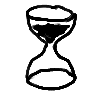

QUI SUIS-JE ?
Salut, je m'appelle Paol j'ai 18ans et j'habite actuellement à Cergy ! Si je devais me décrire je dirais que je suis quelqu’un d'assez posé et de créatif, j'aime bien créer des choses dans mon coins en écoutant de la musique. Cependant ça ne m'empêche pas d'être très actif quand il s'agit de travaux de groupe où je prends généralement instinctivement le lead. Je n'aime pas que les choses n'avancent pas et les personnes "molles" qu'il faut toujours pousser pour avancer un peu/qui font les choses à contre cœur. J'aime vraiment beaucoup la musique, ça me permet de me concentrer et à ne pas penser à plusieurs choses à la fois ce qui aide rarement à la productivité.
D'OÙ VIENS-JE ?
Je viens de Montigny-le-Bretonneux dans les Yvelines, ma mère est Bretonne et mon père vient du nord de la France. Personnellement je me sens plus Breton qu'autre chose. Je pense que c'est dû à la culture Bretonne qui est pour moi une chose importante qu'il faut protéger. Je trouve ça dommage que les autres régions de France aient perdu leurs propres cultures, que ce soit au niveau des contes et légendes qui y étaient transmis ou la fierté de venir d'une région spécifique de France.
QUE FAIS-JE ?
À vrai dire, je ne suis pas la personne la plus sociable, je ne vais donc pas passer mes journées à sortir et à parler à 2000 personnes, ce qui me permet de faire pas mal de choses durant mon temps libre !
Les stylos !
C'est une chose qui m'est venu comme ça il y a quelques années, j'ai commencé à m'y intéresser, à me renseigner sur le sujet, à regarder comment je pourrais en faire et avant que je le sache j'étais en train de construire un atelier dans mon garage et de commander de quoi créer et vendre mes propres stylos en bois précieux. Je ne prends pas vraiment le temps d'en faire dernièrement mais je pense me relancer en proposant mes créations sur des sites en ligne pour ne plus avoir à démarcher des clients moi mêmes ce qui prend beaucoup de temps et qui de plus n'est pas vraiment optimisé car les personnes qui m'entourent ne sont pas mes clients cibles qui sont plus les adultes cherchant un objet unique à transporter avec eux ou à exposer/utilisé à leurs bureaux. Si vous êtes intéressé hésitez pas à me contacter sur moncompte instagram !
Les associations !
Je suis aussi impliqué dans deux associations ; premièrement je suis chez IES (Initiatives Enfance Solidarité) qui est une association présente sur le campus de l'ESSEC avec laquelle je vais régulièrement voir des enfants hospitalisés afin de jouer avec eux et répondre à leurs questions s’ils en ont. Je suis aussi chez ESSEC Japon, l'association d'appréciation culturel japonaise de l'ESSEC où on organise avec d'autres élèves des évènements tels que des projections de films, des sorties/ restaurent mais aussi des évènements de grande ampleur tels que la journée du japon qui se déroule pendant 2 jours dans l'entrée de l'ESSEC avec de nombreux évènements tels que des démonstrations de karaté, des initiations à la cérémonie du thé, à l'origami, à la calligraphie...
Internet !
Je passe pas mal de temps sur Internet (trop), généralement je regarde des vidéos, des Stream ou des animés. J'aime aussi bien regarder des documentaires ou chercher de nouveaux projets à faire dans mon atelier pour l'ajouter à la longue liste des choses que je ne finirais surement jamais mais qui sont bien là !
Le sport !
J’essaie tant bien que mal à me mettre sérieusement au sport mais ma motivation varie beaucoup trop ce qui peut faire que pendant 2/3 semaines je vais faire du sport 5 fois par semaines quand je vais avoir du mal à ne faire sérieusement une fois la semaine suivante. Les mardis je vais aux cours de volley et juste avant à ceux de badminton si j'ai le temps, cependant je ne considère pas vraiment ces sports comme des "sports" parce que je n'arrive pas à me pousser à 100% d'efforts physique pendant les entrainements ce qui me dérange d'ailleurs un peu
OÙ VAIS-JE ?
Bon.. La partie sur le futur :/. Je ne sais jamais trop quoi dire quand on en vient à mon futur. Mais si je sais quelque chose c'est que je veux faire une chose utile pour la société. Je ne veux pas me réveiller dans 30ans et me dire que je fais un boulot qui n'apporte rien à personne. Donc soit un travail qui est utile pour les autres directement soit un travail dans une entreprise qui aide les gens et qui essai de rendre le monde meilleur. Mais le principal c'est que je sois heureux, à partir de là tout me va !
